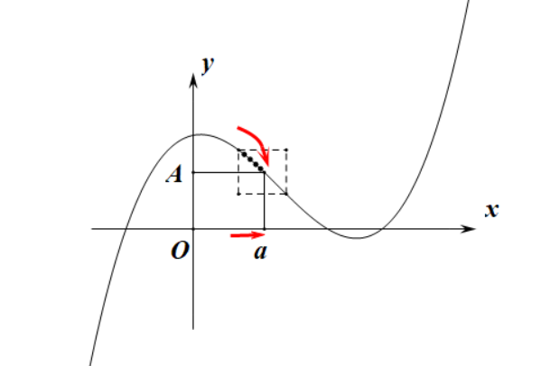

Time: 2022/09/22
tip Author: XrySamuel
Textbook: 数学分析新讲 张筑生
设 a∈R，η>0
- a 的 η 邻域：U(a,η)=(a−η,a+η)
- a 的 η 去心邻域：U˚(a,η)=U(a,η)\{a}
- a 的 η 左邻域：U−(a,η)=(a−η,a]
其中 a 称为邻域中心，η 称为邻域半径
不强调半径时，可写成 U(a)、U˚(a)、U−(a)
设 H>0
- +∞ 的去心 H 领域：U˚(+∞,H)=(H,+∞)
- −∞ 的去心 H 领域：U˚(−∞,H)=(−∞,−H)
不强调半径时，也可写成 U(I)、U˚(I)、U−(I)，I∈{−∞,+∞}
函数的极限
关于函数的定义，又两种定义方式，各有优势：
- Heine 提出的序列式定义：统一地处理各种极限问题
- Cauchy 提出的 ε−δ 定义式：有清晰的几何解释
两种定义是等价的
设 A,a∈R，函数 f(x) 在某个 U˚(a) 上有定义
如果对于任何极限为 a 的实数序列 {xn}⊂U˚(a)，相应的函数值序列 {f(xn)} 极限为 A
则称 x→a 时，函数 f(x) 的极限为 A
记为 x→alimf(x)=A
